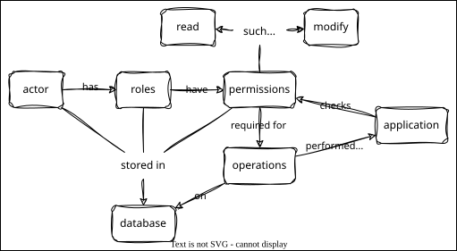

Permissions
Overview

Outline
- Everyone can read everything
- Databases like PostgreSQL implement fine-grained permissions on tables and even rows
- But we need to do it ourself for SQLite
- Note that if someone has access to the
.dbfile, we have no protection
- If we're going to add create, update, and delete, we should add permissions
- The ability to perform an operation on a thing
- Standard approach:
- An actor (person or similar) has zero or more roles
- Each role is a set of permissions
- E.g., reader role has read permission for all tables
- Represent permissions with two tables in the database
- Worry about authentication later
- Add two new tables
roleis a many-to-many join tablepermissiondefines what roles mean (with wildcard for "all tables")- Put these in a temporary copy of the database for now
- Could write a
requirefunction to check permission before doing database query- But what if someone modifies the database between our check and the main query?
- Use
jointo only select rows where permission is available- But this means we can't distinguish "no data" from "no permission"
explore_permissions.pyexplores ways to do what we want with PyPika- Turns out that
joinmust haveon - Since we want everything, use
x == x
- Turns out that
- Having explored ideas in the small, we can implement in the large
test_json.pyuses a custom PyPika function to call SQLite'sjson_group_array- Name the JSON field
something__json - Modify
dict_factoryto unpack and rename
- Go back to
test_permissions.pyand add tests using this- Hard to understand without building it up in steps, but it works